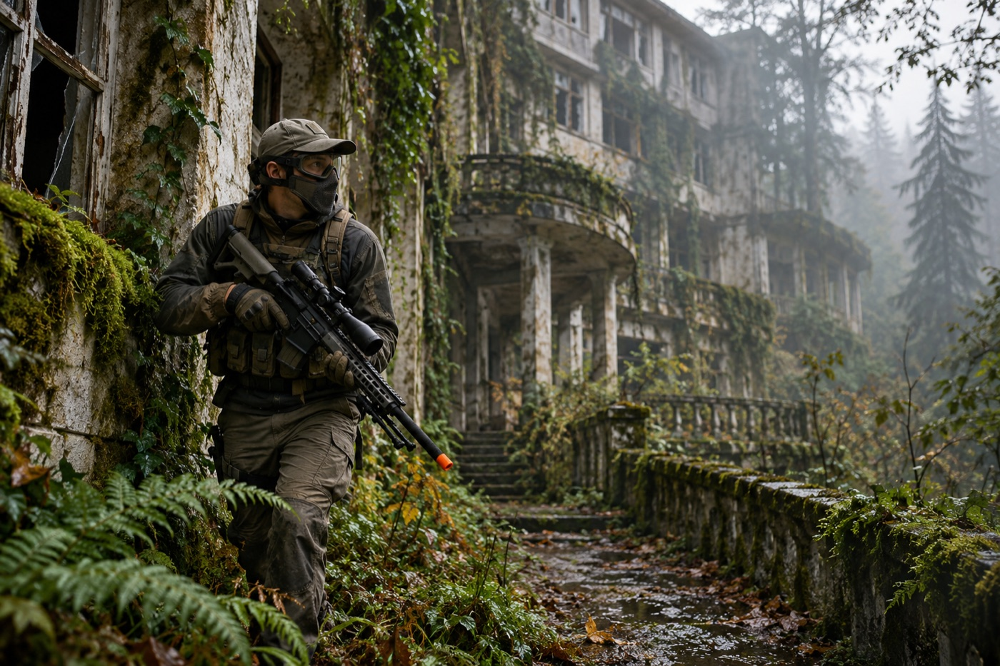
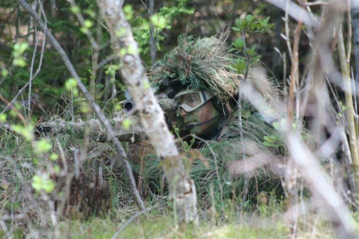
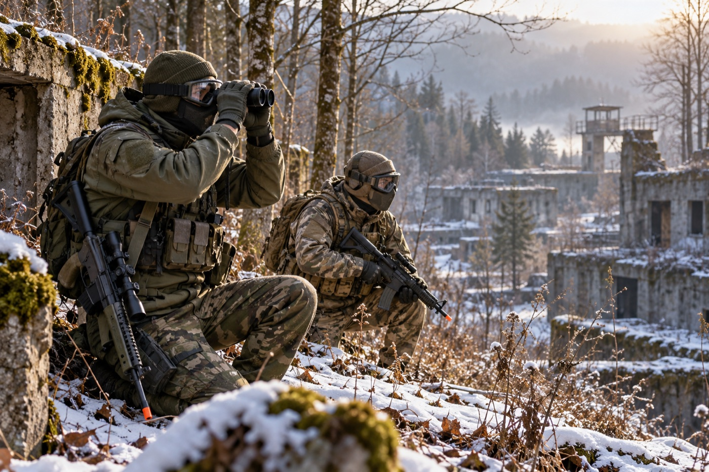
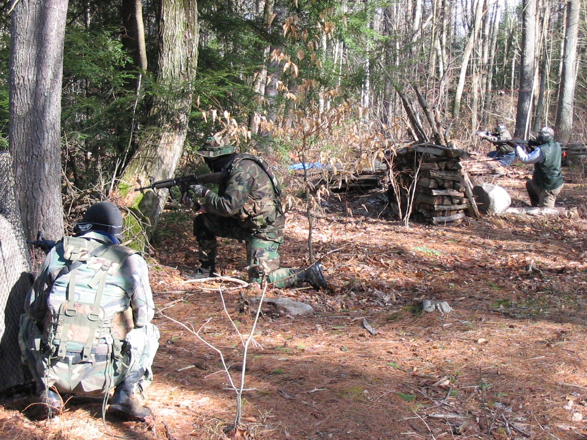
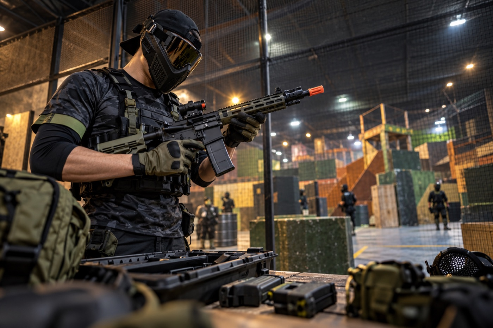
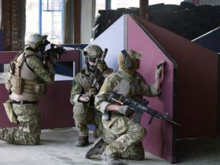
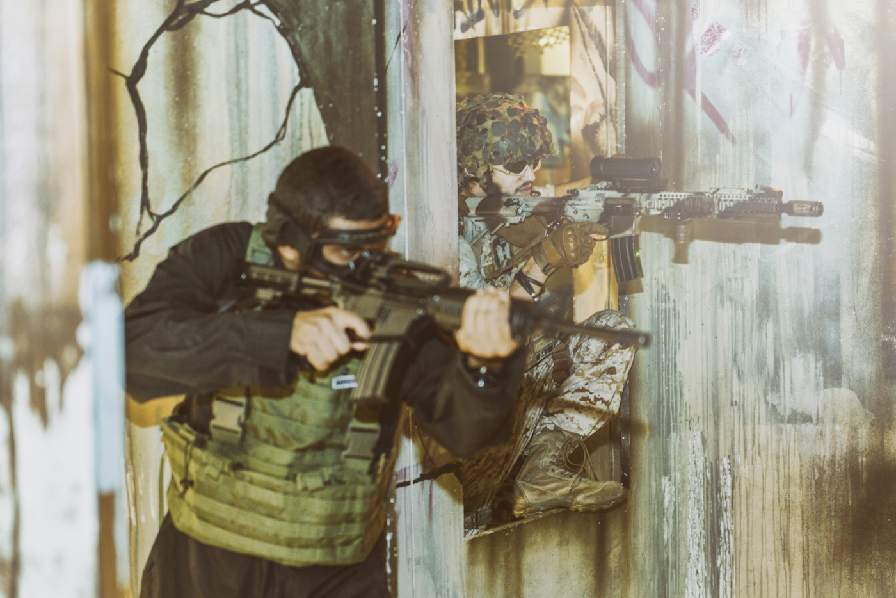

Recon
Observe routes, locate objectives, and relay useful information.
Ethan Roe's field journal
Airsoft is a team-based sport built around movement, communication, precision, and honest play. Players use replicas that launch lightweight plastic BBs in organized games with clear field rules and protective equipment.
I enjoy both sides of the sport: slower, objective-driven military simulations and quick speedsoft rounds. One rewards patience and observation; the other rewards fast decisions and aggressive movement.

AI prompt: A cinematic adult airsoft scout in full eye and face protection moving through a forest-reclaimed abandoned sanatorium, with safe orange-tipped equipment and no combat.
10 yearsaround the hobby
2 stylesmilsim and speedsoft
4 statesvisited for events
I first became interested in airsoft through my older brother. I started with paintball when I was younger, but the equipment, strategy, and variety of airsoft pulled me in more strongly.
During milsim games I usually work in scout and reconnaissance roles, primarily as a sniper. That means staying patient, reading the terrain, and giving my team useful information instead of chasing every shot.
For speedsoft, I switch gears and run a modified M4. My favorite piece of equipment is still my custom sniper build, which represents roughly $800 of careful upgrades and tuning.

AI prompt: None. This is an open-source photograph selected to represent the scout and sniper role.
Observe routes, locate objectives, and relay useful information.
Choose positions carefully and make patience part of the game.
Use a tuned M4 when the format calls for speed and close teamwork.
Spring fields are comfortable and green, but winter is my favorite season. Cooler temperatures make heavy gear easier to wear, prevent overheating, and create a sharper atmosphere on outdoor fields.

AI prompt: Two adult airsoft scouts in full protection observing a quiet winter woodland ruin, binoculars visible, equipment safely slung, cinematic and nonviolent.
| Season | Best feature | Plan for |
|---|---|---|
| Winter | Cooler play and better gear options | Warm hands and reliable batteries |
| Spring | Mild weather and fresh woodland cover | Mud and changing forecasts |
| Summer | Long daylight for events | Water, shade, and lighter equipment |
| Fall | Cool air and changing terrain | Earlier sunsets and fallen leaves |
I have traveled to airsoft events in New York, New Jersey, Pennsylvania, and Virginia. Each trip changes the terrain, the teams, and the way an objective has to be approached.
My most memorable event took place at an abandoned sanatorium. Its long corridors, worn rooms, and overgrown exterior made positioning and communication feel completely different from a normal field.

AI prompt: None. This is an open-source photograph chosen to show how terrain influences team movement.
Good for concealment, recon routes, and longer engagements.
Tighter spaces favor quick communication and controlled movement.
Memorable environments that demand awareness and careful footing.
A good day starts with equipment that fits the field and a role that helps the team. I bring my sniper setup for patient reconnaissance or my modified M4 when the pace is fast.

AI prompt: An adult speedsoft player in full face and eye protection safely checking a customized orange-tipped M4 replica at an indoor arena staging bench.
Match the loadout to recon, support, or fast objective play.
Test power limits, batteries, magazines, footwear, and hydration.
Communicate, call hits, respect boundaries, and keep the game moving.
Airsoft gives me a place to put my energy into something I genuinely enjoy. Once a game begins, attention narrows to the terrain, the objective, and the people beside me.
It also balances two different challenges. Recon asks me to slow down and notice details, while speedsoft pushes reaction time and confidence. Both reward improvement without ever feeling exactly the same.
For me, the best events are an escape, a test of teamwork, and a story I still want to tell afterward.

AI prompt: None. This open-source photograph was selected to represent the teamwork at the center of the hobby.
I used AI to help organize, write, and code this one-page hobby site. The personal history and opinions are mine; AI helped shape them into a clear web experience. Three photorealistic images were generated specifically for this project, and four photographs came from open-source collections.

AI prompt: None. This is an open-source photograph used to distinguish sourced photography from the generated scenes.
Build a responsive, accessible airsoft hobby SPA for Ethan Roe with forest-and-overgrown-building styling, seven required sections, embedded CSS, and hash navigation.
Use Ethan's ten-year history, recon and sniper role, modified M4, custom sniper, interstate events, winter preference, and sanatorium memory in a natural first-person site.
Create cinematic photorealistic adult airsoft scenes with full protective gear, visible orange tips, safe handling, no firing, no injuries, and no logos or text.